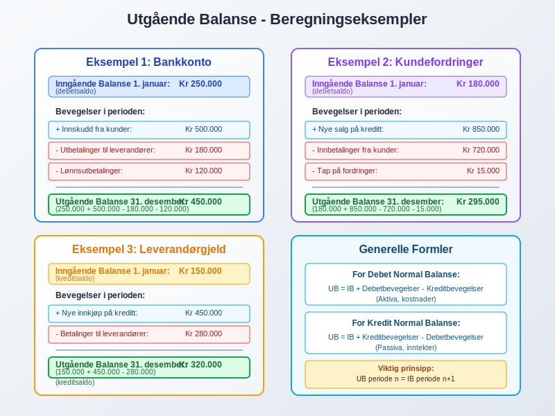
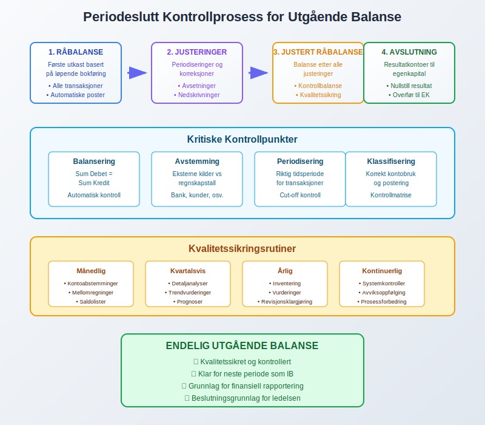
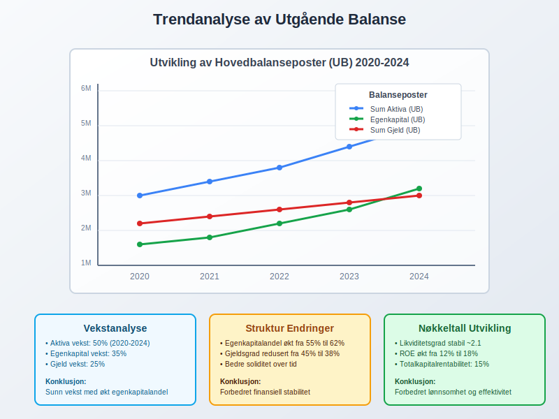
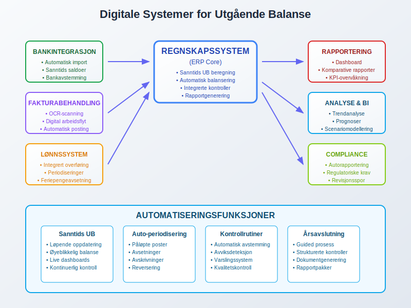
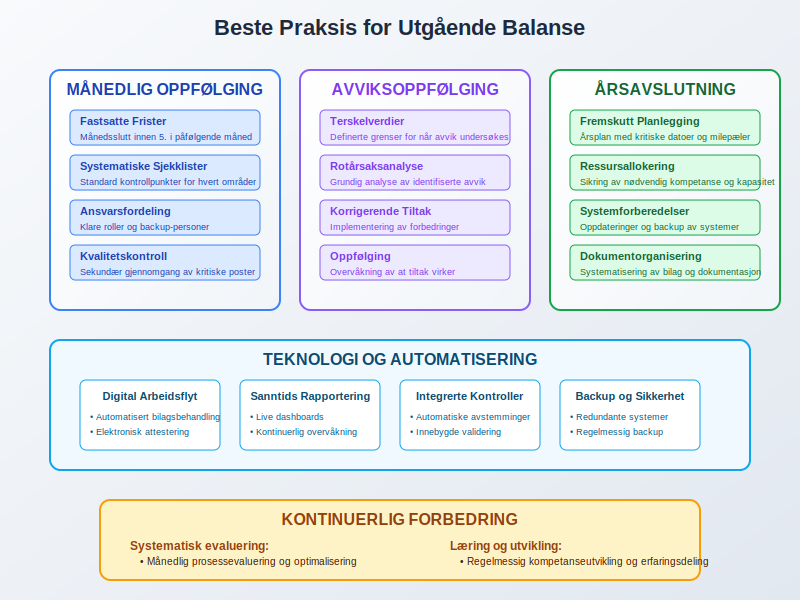
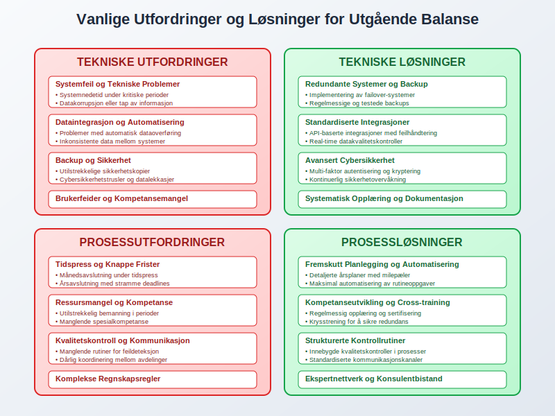
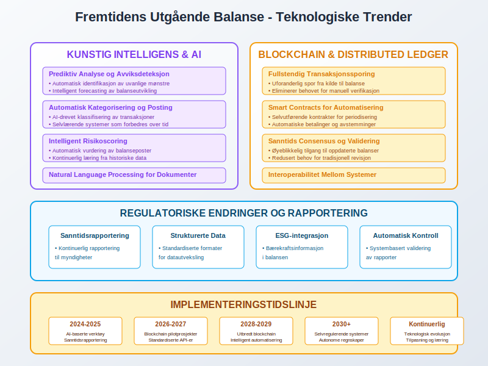

Utgående balanse (UB) er en fundamental komponent i regnskapsføring som representerer saldoen på en konto ved slutten av en regnskapsperiode. Denne saldoen danner grunnlaget for neste periodes inngående balanse og sikrer kontinuitet i den løpende regnskapsføringen. Forståelse av utgående balanse er essensielt for korrekt periodeslutt, balanseoppsett og finansiell rapportering.
Seksjon 1: Grunnleggende Konsept og Definisjon
1.1 Hva er Utgående Balanse?
Utgående balanse (UB) er det endelige beløpet som står på en regnskapskonto når en regnskapsperiode avsluttes. Denne verdien reflekterer alle transaksjoner og justeringer som har påvirket kontoen gjennom hele perioden, fra den inngående balansen ved periodens start til alle registrerte bevegelser underveis.

1.2 Formålet med Utgående Balanse
Utgående balanse tjener flere kritiske funksjoner i regnskapsføring:
- Periodeslutt: Etablerer et klart skille mellom regnskapsperioder
- Kontinuitet: Sikrer at verdier overføres korrekt til neste periode
- Kontroll: Gir grunnlag for kontroll og avstemming av kontoer
- Rapportering: Danner basis for balanse og andre finansielle rapporter
1.3 Sammenheng med Inngående Balanse
Den fundamentale sammenhengen mellom utgående og inngående balanse kan uttrykkes som:
UB (periode n) = IB (periode n+1)

Seksjon 2: Utgående Balanse for Ulike Kontotyper
2.1 Balansekontoer (Permanente Kontoer)
For balansekontoer overføres utgående balanse direkte til neste periode:
Aktivakontoer
- Kassebeholdning: Kontantbeholdning ved periodens slutt
- Kundefordringer: Utestående fordringer fra kunder
- Anleggsmidler: Bokført verdi etter avskrivninger
- Varelager: Verdien av lagerbeholdning ved periodens slutt
Passivakontoer
- Leverandørgjeld: Utestående forpliktelser til leverandører
- Banklån: Gjenstående lånesaldo
- Egenkapital: Akkumulert egenkapital inkludert årets resultat

2.2 Resultatkontoer (Midlertidige Kontoer)
Resultatkontoer har en spesiell behandling ved periodeslutt:
Inntektskontoer
- Salgsinntekter: Akkumulerte inntekter for perioden
- Renteinntekter: Opptjente renter i perioden
- Andre driftsinntekter: Øvrige inntektskilder
Kostnadskontoer
- Varekostnad: Totale varekostnader for perioden
- Lønnskostnader: Samlede lønnsutgifter inkludert arbeidsgiveravgift
- Avskrivninger: Avskrivninger på anleggsmidler

Seksjon 3: Beregning og Fastsettelse av Utgående Balanse
3.1 Grunnleggende Beregningsformel
For alle kontotyper gjelder den grunnleggende formelen:
UB = IB + Debetbevegelser - Kreditbevegelser
For kreditsaldo kontoer: UB = IB + Kreditbevegelser - Debetbevegelser
3.2 Praktisk Eksempel - Bankkonto
| Element | Beløp |
|---|---|
| Inngående balanse 1. januar | 250.000 |
| + Innskudd i perioden | 500.000 |
| - Uttak i perioden | 180.000 |
| Utgående balanse 31. desember | 570.000 |
3.3 Praktisk Eksempel - Kundefordringer
| Element | Beløp |
|---|---|
| Inngående balanse | 180.000 |
| + Nye salg på kredit | 850.000 |
| - Innbetalinger fra kunder | 720.000 |
| - Tap på fordringer | 15.000 |
| Utgående balanse | 295.000 |

Seksjon 4: Utgående Balanse i Periodesluttprosessen
4.1 Kronologisk Prosessflyt
Fastsettelse av utgående balanse følger en systematisk prosess:
- Råbalanse: Første utkast basert på løpende bokføring
- Justeringsposter: Periodiseringer og korreksjoner
- Justert råbalanse: Balanse etter justeringer
- Avslutningsposter: Resultatkontoer føres mot egenkapital
- Avslutningsbalanse: Endelig utgående balanse
4.2 Kritiske Kontrollpunkter
Ved fastsettelse av utgående balanse må følgende kontrolleres:
- Balansering: Sum debet = Sum kredit
- Avstemming: Eksterne kilder mot regnskap
- Periodisering: Riktig tidsperiode for transaksjoner
- Klassifisering: Korrekt kontobruk og postering

Seksjon 5: Særlige Forhold og Justeringer
5.1 Periodiseringer og Påløpte Poster
Utgående balanse påvirkes av:
Periodiserte Kostnader
- Forskuddsbetalte kostnader: Utgifter betalt på forhånd
- Påløpte kostnader: Kostnader opptjent men ikke betalt
- Avsetninger: Estimerte fremtidige forpliktelser
Periodiserte Inntekter
- Forskuddsbetalt inntekt: Mottak av betaling på forhånd
- Påløpte inntekter: Opptjente inntekter ikke fakturert
5.2 Verdijusteringer
Utgående balanse må reflektere korrekte verdier:
- Nedskrivninger: Verdifall på aktiva
- Oppskrivninger: Verdistigning innenfor anskaffelseskost
- Valutajusteringer: Omregning av utenlandsk valuta
- Markedsverdijusteringer: Verdipapirer til virkelig verdi

Seksjon 6: Utgående Balanse og Finansiell Rapportering
6.1 Balanserapport
Utgående balanse danner grunnlaget for balansen:
| AKTIVA | UB 31.12 | PASSIVA | UB 31.12 |
|---|---|---|---|
| ANLEGGSMIDLER | EGENKAPITAL | ||
| Bygninger | 2.500.000 | Aksjekapital | 500.000 |
| Maskiner | 800.000 | Opptjent egenkapital | 1.850.000 |
| OMLØPSMIDLER | GJELD | ||
| Varelager | 650.000 | Banklån | 1.200.000 |
| Kundefordringer | 420.000 | Leverandørgjeld | 320.000 |
| Bank | 150.000 | Annen kortsiktig gjeld | 200.000 |
| SUM AKTIVA | 4.520.000 | SUM PASSIVA | 4.070.000 |
6.2 Sammenligning og Trendanalyse
Utgående balanse muliggjør sammenligning over tid:
- År-over-år endringer: Vekst eller nedgang i poster
- Strukturelle endringer: Endret sammensetning av aktiva og passiva
- Nøkkeltall utvikling: Likviditet, soliditet og lønnsomhet

Seksjon 7: Kvalitetssikring og Kontrollrutiner
7.1 Interne Kontroller
For å sikre korrekt utgående balanse:
Månedlige Rutiner
- Kontoabstemminger: Systematisk gjennomgang av alle hovedkontoer
- Mellomregninger: Kontroll og utligning av mellomregningskontoer
- Saldolister: Gjennomgang og analyse av utskrevne saldolister
Årlige Rutiner
- Inventering: Fysisk telling og verifikasjon
- Vurderinger: Gjennomgang av verdiansetttelser
- Dokumentasjon: Sikring av fullstendig bilagsdokumentation
7.2 Eksterne Verifikasjoner
- Bankavstemming: Sammenligning med bankkontoutskrift
- Leverandørkonfirmasjoner: Bekreftelse av gjeldssaldoer
- Kundebekreftelser: Verifikasjon av fordringssaldoer
- Revisorkontroll: Ekstern verifikasjon av vesentlige poster

Seksjon 8: Digitale Systemer og Automatisering
8.1 Moderne Regnskapssystemer
Dagens regnskapssystemer tilbyr:
Automatiske Funksjoner
- Sanntidsbalanse: Løpende oppdatering av utgående balanse
- Automatisk periodisering: Systemgenererte periodiseringer
- Integrerte kontroller: Innebygde validering og kontrollrutiner
- Årsavslutningsverktøy: Strukturerte prosesser for periodeslutt
Rapporteringsmuligheter
- Dashboard: Grafisk fremstilling av nøkkelbalanseposter
- Komparative rapporter: Sammenligning på tvers av perioder
- Detaljerte utdrag: Spesifikke kontoanalyser og bevegelser
8.2 Integrasjoner og Dataflyt
- Bank: Automatisk import av banktransaksjoner
- Fakturabehandling: Digital behandling av inn- og utgående fakturaer
- Lønnssystem: Integrert overføring av lønnsposter
- Lager: Sanntidsoppdatering av lagerverdier

Seksjon 9: Juridiske og Regulatoriske Aspekter
9.1 Lovkrav til Utgående Balanse
Norsk regnskapslovgivning stiller krav til:
Bokføringsloven
- Nøyaktighet: Utgående balanse må reflektere faktiske forhold
- Fullstendighet: Alle transaksjoner skal være registrert
- Dokumentasjon: Tilstrekkelig bilagsmateriale for alle poster
- Oppbevaring: Krav til arkivering og tilgjengelig
Regnskapsloven
- Vurderingsprinsipper: Konsistent anvendelse av verdsettelsesregler
- Offentliggjøring: Krav til publisering av balanse
- Sammenlignbarhet: Konsistent presentasjon over tid
9.2 Revisjonsaspekter
Revisor fokuserer særlig på:
- Vesentlighet: Betydelige poster i utgående balanse
- Risikoomrader: Områder med høy risiko for feil
- Kontrollmiljø: Kvaliteten på interne kontrollerog prosesser
- Dokumentasjon: Tilstrekkelig bevis for balanseposter

Seksjon 10: Praktiske Tips og Beste Praksis
10.1 Månedlig Oppfølging
For effektiv håndtering av utgående balanse:
Strukturerte Rutiner
- Fastsatte datoer: Faste frister for månedlig avslutning
- Sjekklister: Systematisk gjennomgang av alle områder
- Ansvarsfordeling: Klare roller og ansvar i prosessen
- Kvalitetskontroll: Sekundær gjennomgang av kritiske poster
Avviksoppfølging
- Terskelverdier: Definerte grenser for når avvik skal undersøkes
- Rotårsaksanalyse: Grundig analyse av identifiserte avvik
- Korrigerende tiltak: Implementering av forbedring
- Overvåkning: Oppfølging av at tiltak virker
10.2 Årsavslutningsforberedelser
Fremskutt Planlegging
- Årsplan: Oversikt over kritiske datoer og milepæler
- Ressursallokering: Sikring av nødvendig kompetanse og kapasitet
- Systemforberedelser: Oppdateringer og backup av systemer
- Dokumentorganisering: Systematisering av bilag og dokumentasjon
Kvalitetssikring
- Kontrollmatriser: Oversikt over alle kontrollpunkter
- Revisjonsklargjøring: Forberedelse til ekstern revisjon
- Rapportvalidering: Grundig gjennomgang av alle rapporter
- Arkivering: Sikker oppbevaring av årsavslutningsdokumentasjon

Seksjon 11: Vanlige Utfordringer og Løsninger
11.1 Typiske Problemområder
Tekniske Utfordringer
- Systemfeil: Tekniske problemer i regnskapssystemer
- Dataintegrasjon: Problemer med automatisk dataoverføring
- Backup og sikkerhet: Tap av data eller sikkerhetshull
- Brukerfeider: Feil bruk av systemfunksjonalitet
Prosessuelle Utfordringer
- Tidspress: Knappe frister for periodeslutt
- Ressursmangel: Utilstrekkelig bemanning eller kompetanse
- Kvalitetskontroll: Manglende rutiner for feildeteksjon
- Kommunikasjon: Dårlig koordinering mellom avdelinger
11.2 Løsningsstrategier
Forebyggende Tiltak
- Systematisk opplæring: Regelmessig kompetanseutvikling
- Redundans: Backup-løsninger og alternative prosesser
- Standardisering: Klare retningslinjer og prosedyrer
- Kontinuerlig forbedring: Regelmessig evaluering og optimalisering
Reaktive Tiltak
- Feilhåndtering: Klare prosedyrer for korrigering av feil
- Eskalering: Definerte nivåer for ansvarsoverføring
- Dokumentasjon: Grundig registrering av problemer og løsninger
- Erfaringsdeling: Læring på tvers av organisasjonen

Seksjon 12: Fremtidens Utgående Balanse
12.1 Teknologiske Utviklingstrekk
Kunstig Intelligens og Maskinlæring
- Prediktiv analyse: Automatisk identifikasjon av avvik og mønstre
- Automatisk kategorisering: AI-drevet klassifisering av transaksjoner
- Risikoscoring: Intelligent vurdering av balanseposter
- Kontinuerlig læring: Systemer som forbedres over tid
Blockchain og Distributed Ledger
- Sporbarhet: Fullstendig transaksjonssporing fra kilde til balanse
- Tillit: Redusert behov for manuell verifikasjon
- Sanntidsrapportering: Øyeblikkelig tilgang til oppdaterte balanser
- Automatisk avstemming: Selvrekonsilierende systemer
12.2 Regulatoriske Endringer
Digitalisering av Rapportering
- Sanntidsrapportering: Kontinuerlig rapportering til myndigheter
- Strukturerte data: Standardiserte formater for datautveksling
- Automatisk kontroll: Systembasert validering av rapporter
- Redusert administrativ byrde: Strømlinjeformede prosesser
Bærekraftsrapportering
- ESG-integrasjon: Miljø-, sosial- og styringsinformasjon i balansen
- Ikke-finansielle måltall: Utvidet balanseinformasjon
- Stakeholder-rapportering: Bredere rapporteringsforpliktelser

Konklusjon
Utgående balanse (UB) er en kritisk komponent i regnskapsføring som sikrer kontinuitet, nøyaktighet og tillit i finansiell rapportering. Som bindeleddet mellom regnskapsperioder, representerer UB ikke bare en teknisk sluttsaldo, men fundamentet for påfølgende periods regnskapsføring og beslutningstaking.
Korrekt håndtering av utgående balanse krever:
- Systematiske prosesser for beregning og kontroll
- Grundig kvalitetssikring gjennom interne og eksterne verifikasjoner
- Teknologisk støtte for effektiv behandling og rapportering
- Kontinuerlig kompetanseutvikling for å følge med utviklingen
For å mestre utgående balanse må organisasjoner etablere robuste rutiner som kombinerer faglig kunnskap med teknologiske verktøy. Dette sikrer ikke bare overholdelse av juridiske krav, men skaper også et solid grunnlag for strategisk beslutningstaking og finansiell styring.
Utgående balanse vil fortsette å utvikle seg med teknologiske fremskritt og endrede regulatoriske krav. Organisasjoner som investerer i moderne systemer og prosesser, samtidig som de opprettholder fokus på grunnleggende regnskapsprinsipper, vil være best posisjonert for fremtidens krav til finansiell rapportering og transparens.
Gjennom systematisk arbeid med utgående balanse legger organisasjoner grunnlaget for pålitelig regnskapsføring, effektiv økonomistyring og tillit hos alle interessenter. Dette gjør UB til mer enn bare en teknisk sluttsaldo - det er en byggestein for finansiell integritet og organisatorisk suksess.